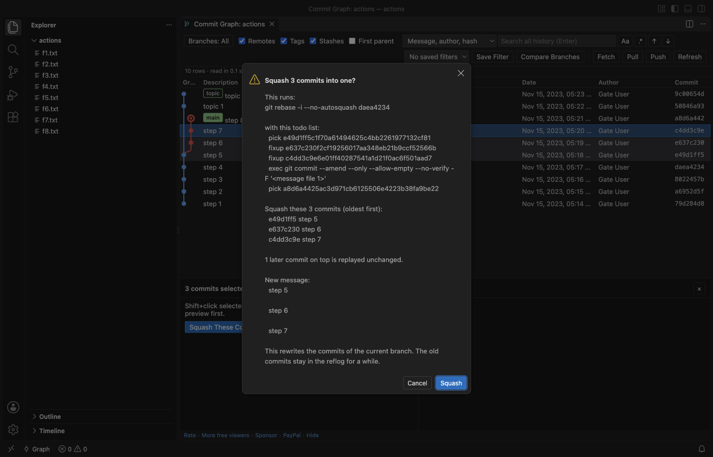

Git Commit Graph & History Log (Branches, Compare, Blame)
Git Commit Graph & History Log (Branches, Compare, Blame), a VS Code extension by Zovo
Free git commit graph and history log for VS Code: every branch, tag, remote and stash as a graph that opens 200,000 commits in about a second, search across the full history (message, author, hash, file path, changed text), compare any two commits, file and line history, and checkout, merge, rebase, cherry-pick, revert, reset and squash with the exact git command shown first. No sign-in, no network of its own.
Free, MIT license. Needs VS Code 1.90.0 or newer. Extension ID zovo.zovo-git-commit-graph, version 0.1.0.

Free, no sign-in, works offline. The extension makes no network calls of its own. Fetch, Pull and Push run your own git, with your own credentials, only when you click them and confirm. Three Pro tools have 3 free tries each (see Free and Zovo Pro below).
See every branch, tag, remote branch and stash of a repository as one graph, search the whole history, compare any two commits, and run checkout, merge, rebase, cherry-pick, revert, reset and squash with the exact git command shown before anything runs.
Questions people ask
Is Git Commit Graph & History Log (Branches, Compare, Blame) free?
Yes. Git Commit Graph & History Log (Branches, Compare, Blame) is free and MIT licensed.
How do I install Git Commit Graph & History Log (Branches, Compare, Blame)?
Click "Install in VS Code" above, or search for zovo.zovo-git-commit-graph in the Extensions view.
What you get
- The graph: Branches, tags, remotes and stashes as coloured lanes, with a row for uncommitted changes on top. Only the rows on screen are drawn, so 200,000 commits scroll as smoothly as 50.
- Search the full history: Message (the whole message, not only the first line), author, email or hash. Or switch to File path (commits that touched
src/parseror*.md), Changed text (git log -S) or Changed lines regex (git log -G). Enter and Shift+Enter step through the matches, even when they are far below the screen. - Commit details: Message, author, committer, parents and the changed files with +/- counts. Click a file for the VS Code diff. Merge commits can be compared with each parent. Open any file as it was at that commit.
- Compare: Ctrl+click (Cmd+click on macOS) a second commit to list the files that differ between the two, or compare a commit with your working tree.
- Actions that ask first: Right-click a commit, branch or tag: check out, create, rename and delete branches and tags, merge (normal,
--no-ff,--ff-only,--squash), rebase, cherry-pick, revert, reset (soft, mixed, hard with a warning), stash apply, pop and drop. Each one shows the git command in a confirmation, and nothing runs until you click the button. - Squash a range: Click the newest commit, Shift+click the oldest, then Squash These Commits. The preview lists the commits and the
git rebase -itodo list; git does the work, so the result is the same as on the command line. - When git stops: A rebase, merge or cherry-pick that stops on a conflict shows a bar with Continue, Skip and Abort.
- File and line history: Show File History follows renames. Show Line History for Selection lists the commits that changed the selected lines, with each change inline (the history of those lines' blame).
- Many repositories: Nested repositories and submodules each get an entry in the repository picker.
- Dark and light: Every colour comes from your VS Code theme.
Why this one
The most installed git graph extension on the Marketplace had its last release on 5 April 2021. Its users ask for these things, and this extension measures them in its test gate on real repositories:
| What users report | Where | Here |
|---|---|---|
| Find only searches the loaded commits ("'Find' doesn't search full log - only what's loaded. That's a dealbreaker") | Marketplace review, 2025-06-20; issue #571 (branches far apart are not shown); issue #468 (text after a blank line in a message is not found) | The whole history is read (200,000 commits in 2 to 9 s in the gate, first rows in under 2 s). Search found commit 1,234 of 200,000 at row 198,766, far below the screen, and searches the full message with git. |
| No squash ("No commit squashing?") | Marketplace review, 2025-08-14; issue #410; issue #182 | Squash a range with a preview. In the gate the result had the same trees and author as git rebase -i typed in a terminal. |
| Not maintained, broke with a new VS Code ("As of VS Code 1.109 Git Graph does not work anymore") | Marketplace review, 2026-02-18; issue #715 | Tested in VS Code 1.142 (November 2026). Works from VS Code 1.90, so also in Cursor and Windsurf. |
This extension is not made by, and does not replace, any other publisher's extension. It reads the same git repository, so you can use both.
Squash with a preview

Large repositories
Measured in the real VS Code gate on a repository with 200,000 commits on 30 branches (made with git fast-import):
- First rows on screen 490 to 1,860 ms after the load starts, and all 200,000 commits read in 2 to 9 s (five gate runs on a shared Mac, the slower numbers while dozens of other jobs ran).
- Scrolling 2,400 rows in 120 frames: 0 of 120 frames took longer than 50 ms (the longest took 17 ms).
- The history is read in a background thread from a
git logstream. The extension host only passes messages, and the graph data takes about 61 MB. - Files bigger than 50 MB at a commit (setting
zovoGit.maxFileMB) are not loaded into a diff; a short note says why. - Commits beyond
zovoGit.graph.maxCommits(500,000 by default) are not drawn; path and changed-text searches still cover the full history.
Safe by design
- Read commands (the graph, search, details, diffs, history) run git with repository hooks, fsmonitor, external diff, textconv filters, the pager and the clean/smudge filters from the repository's own config turned off, with no optional locks and no download of missing objects. Opening a repository you just cloned cannot run a program from it. The gate checks this with a repository whose hooks, fsmonitor, textconv, external diff, pager and filters would each write a file.
- A branch, tag or remote whose name starts with "-" (git would read it as an option) is refused with a message. Nothing runs.
- Write commands run only after your click in a confirmation that shows the command, and behave like the same command in a terminal (your hooks run, as they would there).
- The extension waits until you trust the folder (Restricted Mode).
- It stores no credentials and has no telemetry.
Commands
| Command | What it does |
|---|---|
| Commit Graph: Show Commit Graph | Opens the graph (also the Graph button in the status bar and in Source Control) |
| Commit Graph: Search All History | Opens the graph with the search box focused |
| Commit Graph: Show File History | Commits that changed the current file, renames followed |
| Commit Graph: Show Line History for Selection | Commits that changed the selected lines |
| Commit Graph: Go to Commit... | Jumps to a hash, branch, tag or revision |
| Commit Graph: Compare Branches (Report)... | Markdown report: commits on each side, merge base, changed files, authors |
| Commit Graph: Interactive Rebase... | Reorder, reword, squash, fixup and drop commits with drag and drop |
Settings
zovoGit.path, zovoGit.graph.order (date or topo), zovoGit.graph.maxCommits, zovoGit.graph.showRemoteBranches, zovoGit.graph.showTags, zovoGit.graph.showStashes, zovoGit.graph.showUncommittedChanges, zovoGit.dateFormat, zovoGit.maxFileMB, zovoGit.maxFilesInDetails, zovoGit.detectDepth, zovoGit.statusTimeoutSec, zovoGit.showStatusBarItem, zovoGit.showEditorTitleButton, zovoGit.showSupportLinks, zovoGit.askForRating.
Free and Zovo Pro
The graph, search, commit details, diffs, file and line history, squash, switching to a saved filter and every git action are free, with no account and no time limit.
Three tools are part of Zovo Pro (USD 19 once, for every Zovo extension). Each has 3 free tries on your computer, and a try counts only when the tool produced its result:
| Pro tool | What it does | A try counts when |
|---|---|---|
| Branch comparison report | Markdown report of two branches: commits on each side, merge base, changed files, authors | the report opens |
| Interactive rebase editor | Reorder, reword, squash, fixup and drop commits with drag and drop | git finished the rebase |
| Saved graph filters | Save the branch filter and view options under a name | the filter is saved |
Escape or Cancel never uses a try. Nothing about Pro shows when you open the graph: the Pro panel appears only when you click a Pro tool with no tries left. It offers "Pay by card (USD 19)" first (the key shows on the page right after payment), then Zovo Pro on GitHub Sponsors, PayPal, and "Enter a key". One unlock turns Pro on in every Zovo extension on the computer.
Privacy
No telemetry, no account. The only network call is the GitHub Sponsors check, and it runs only when you click "I already paid: unlock with GitHub Sponsors". The only state the extension keeps is in VS Code's own storage: saved filters per workspace and whether you answered the rating question.
Install Git Commit Graph & History Log (Branches, Compare, Blame)
Click the button to open VS Code and install it, or press Ctrl+P (Cmd+P on macOS) in VS Code and run ext install zovo.zovo-git-commit-graph.
Free, MIT license. Needs VS Code 1.90.0 or newer. Extension ID zovo.zovo-git-commit-graph, version 0.1.0.
Source code and issues are on GitHub.
Zovo Pro and support
Zovo Pro: USD 19 once, every Zovo viewer. It turns on the Pro tools in this extension and in the other Zovo extensions you use. The free features stay free.
After a card payment your license key shows on the next page. Paste it with the command "Zovo Pro: Enter a key".
You can also support the work with no Pro:
Need your format supported?
Open a format request with a sample file, and I reply there whether it can be done. For USD 299 once, through this GitHub Sponsors tier, I add your file format or a missing feature to this extension, with tests, within 7 days.